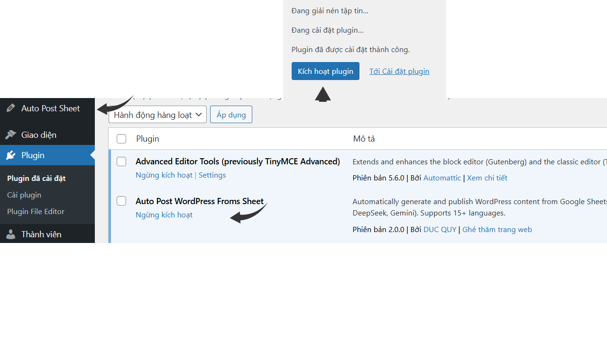
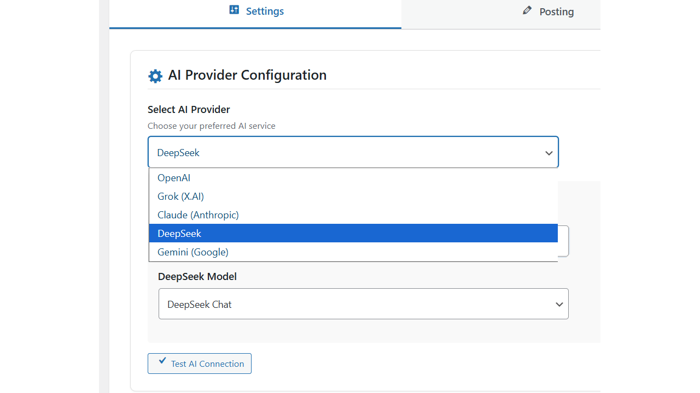
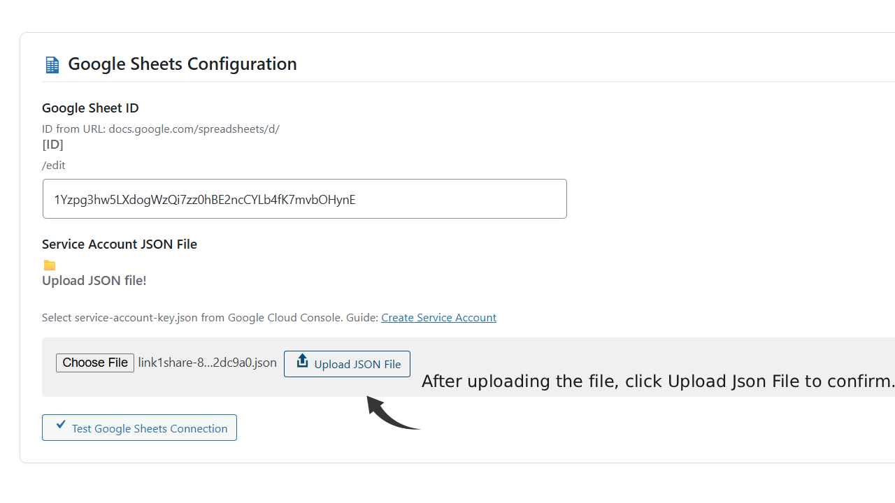
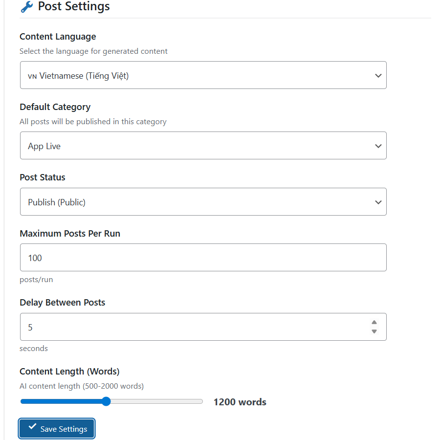
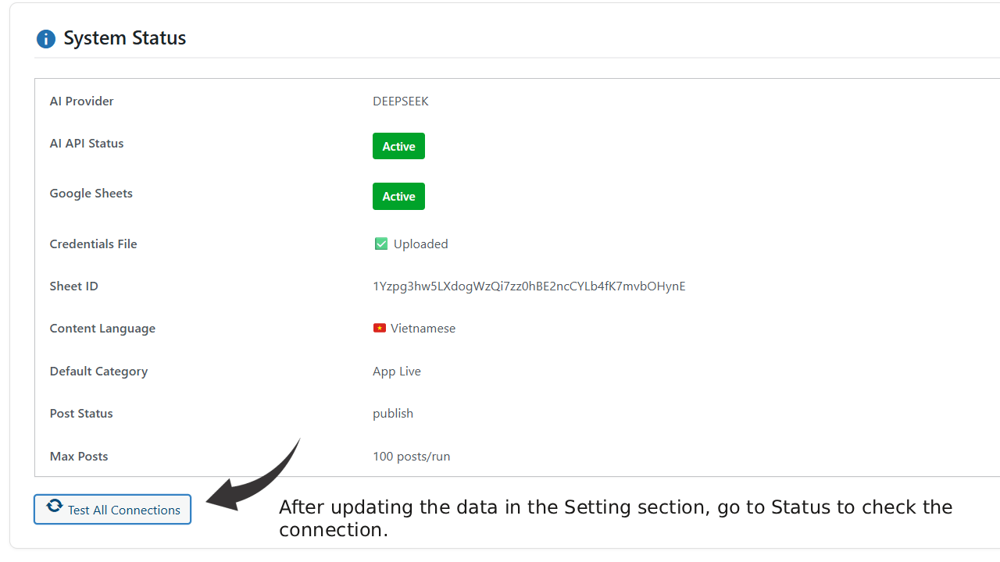
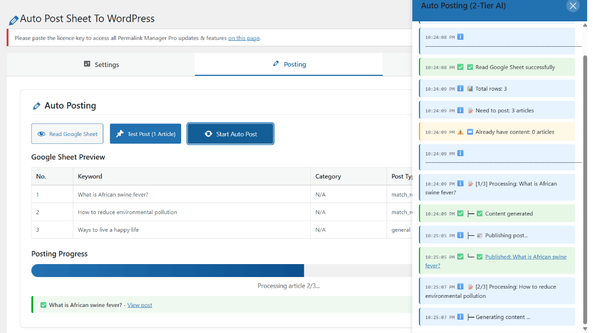
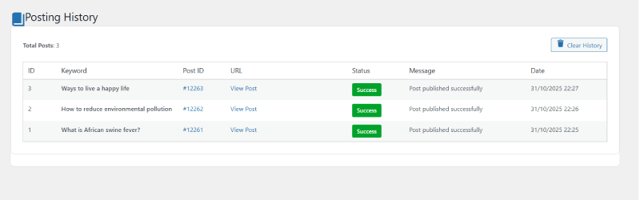

Introduction
Welcome to Auto Post Sheet To WordPress - the most advanced AI-powered content automation plugin for WordPress.
This plugin automatically generates high-quality WordPress posts from Google Sheets using cutting-edge AI technology. Simply prepare your keywords in a Google Sheet, and let AI create professional content in 15+ languages.
Who is this for?
- Content Marketers - Generate unlimited articles at scale
- Bloggers - Automate your content creation workflow
- SEO Agencies - Create multilingual content for clients
- Publishers - Maintain consistent posting schedules
- Developers - Build custom content solutions
For more detailed documentation, visit our Google Docs guide
Features
5 AI Providers
Choose from OpenAI, Claude, Grok, DeepSeek, or Gemini. Each provider offers multiple models for different quality and cost needs.
15+ Languages
Generate content in Vietnamese, English, Chinese, Spanish, French, German, and 10+ more languages with native-quality output.
Google Sheets Integration
Manage keywords, categories, and content directly in Google Sheets. Easy collaboration with your team.
Real-time Progress
Beautiful animated progress sidebar shows live updates as content is being generated and published.
Content Control
Adjust content length (500-2000 words), set posting delays, choose post status (draft/publish), and more.
Security Hardened
Built with WordPress Coding Standards. Protected against XSS, SQL injection, and CSRF attacks.
Auto Image Insert
Automatically insert featured images after the first H2 heading for better visual appeal.
Detailed History
Track all posting activities with timestamps, success/failure status, and error messages.
SEO Optimized
AI-generated content includes proper H2/H3 structure, natural keyword placement, and engaging introductions.
All AI-generated content is structured with proper HTML tags, includes engaging sapo (introduction), multiple H2 sections with H3 subsections, and natural language flow.
System Requirements
Server Requirements
| Component | Minimum | Recommended |
|---|---|---|
| WordPress | 5.0+ | 6.4+ |
| PHP | 7.4+ | 8.1+ |
| MySQL | 5.6+ | 8.0+ |
| Memory Limit | 128 MB | 256 MB+ |
| Max Execution Time | 60 seconds | 120 seconds+ |
Required PHP Extensions
- cURL - For API communications
- OpenSSL - For secure JWT token generation
- JSON - For data processing
- mbstring - For multilingual support
External Services Required
AI API Key (Choose One)
- OpenAI API Key
- Claude API Key
- Grok API Key
- DeepSeek API Key
- Gemini API Key
Google Cloud Service Account
- Service Account JSON file
- Google Sheets API enabled
- Shared access to your spreadsheet
AI API usage costs are SEPARATE from the plugin price. You will be charged by the AI provider based on your usage. Please check their pricing pages before starting.
Installation
Method 1: WordPress Admin Upload (Recommended)
Download Plugin
Download the auto-post-sheet-to-wp.zip file from your purchase confirmation email.
Access WordPress Admin
Log in to your WordPress admin panel and navigate to Plugins → Add New

Upload Plugin
Click the "Upload Plugin" button at the top of the page.
Choose File
Click "Choose File" and select the auto-post-sheet-to-wp.zip file.
Install & Activate
Click "Install Now" and then "Activate Plugin" after installation completes.
Method 2: FTP Upload
# 1. Extract the ZIP file
unzip auto-post-sheet-to-wp.zip
# 2. Upload via FTP to:
/wp-content/plugins/auto-post-sheet-to-wp/
# 3. Set correct permissions
chmod 755 auto-post-sheet-to-wp
chmod 644 auto-post-sheet-to-wp/*.php
# 4. Activate via WordPress adminAfter activation, you'll see a new menu item "Auto Post Sheet" in your WordPress admin sidebar.
Configuration
Follow these steps to configure the plugin for first-time use.
Step 1: AI Provider Setup
1.1 Choose Your AI Provider
Navigate to Auto Post Sheet → Settings and select your preferred AI provider:
OpenAI
Models: GPT-4o, GPT-4o Mini, GPT-4 Turbo, GPT-3.5 Turbo
Best for: High-quality English content
Get API Key: OpenAI Platform
Claude
Models: Claude 3.5 Sonnet, Claude 3 Opus, Sonnet, Haiku
Best for: Long-form content, creative writing
Get API Key: Anthropic Console
Grok
Models: Grok Beta, Grok 2 Latest
Best for: Latest information, real-time data
Get API Key: X.AI Console
DeepSeek
Models: DeepSeek Chat, DeepSeek Coder
Best for: Technical content, code examples
Get API Key: DeepSeek Platform
Gemini
Models: Gemini 2.0 Flash, 1.5 Pro, Flash, Flash-8B
Best for: Multilingual content, fast generation
Get API Key: Google AI Studio
1.2 Enter API Key
Copy your API key from the provider's website
Paste it into the corresponding field in plugin settings
Select your preferred model from the dropdown
Click "Test AI Connection" to verify

AI Provider Configuration Screen
Never share your API keys publicly. They are stored securely in your WordPress database and encrypted during transmission.
Step 2: Google Sheets Setup
2.1 Create Google Cloud Service Account
Go to Google Cloud Console
Visit console.cloud.google.com
Create New Project
Click "Select a project" → "New Project" → Name it (e.g., "WordPress Automation")
Enable Google Sheets API
Go to "APIs & Services" → "Library" → Search "Google Sheets API" → Click "Enable"
Create Service Account
Go to "IAM & Admin" → "Service Accounts" → "Create Service Account"
- Name: "WordPress Sheet Sync"
- Role: "Editor" or "Viewer" (depending on your needs)
Create JSON Key
Click on the service account → "Keys" tab → "Add Key" → "Create new key" → Choose "JSON"
A service-account-key.json file will be downloaded to your computer.
2.2 Upload Credentials to WordPress
In plugin settings, find the "Service Account JSON File" section
Click "Choose File" and select your service-account-key.json
Click "Upload JSON File"
You'll see a success message with your service account email
2.3 Prepare Your Google Sheet
Create a new Google Sheet with the following columns:
| Column | Required? | Description | Example |
|---|---|---|---|
| keyword | Required | Main topic/keyword for the article | Best AI tools 2025 |
| category | Optional | WordPress category name | Technology |
| data_source | Optional | Reference data for AI to use | Focus on business applications |
| post_type | Optional | Article type (news, tutorial, review, etc) | review |
| images | Optional | Image URL to insert in article | https://example.com/image.jpg |
| content | Auto-filled | Generated content (filled by plugin) | - |
| link_post | Auto-filled | Published post URL (filled by plugin) | - |
Example Google Sheet Structure:
┌──────────────────────┬────────────┬─────────────┬───────────┬────────────┬─────────┬───────────┐
│ keyword │ category │ data_source │ post_type │ images │ content │ link_post │
├──────────────────────┼────────────┼─────────────┼───────────┼────────────┼─────────┼───────────┤
│ Best AI tools 2025 │ Technology │ │ review │ image1.jpg │ │ │
│ WordPress SEO tips │ SEO │ │ tutorial │ image2.jpg │ │ │
│ Python for beginners │ Programming│ │ tutorial │ │ │ │
└──────────────────────┴────────────┴─────────────┴───────────┴────────────┴─────────┴───────────┘2.4 Share Sheet with Service Account
You MUST share your Google Sheet with the service account email, otherwise the plugin cannot access it.
Copy the service account email from plugin settings (looks like: your-service@project-id.iam.gserviceaccount.com)
Open your Google Sheet and click the "Share" button
Paste the service account email and give it "Editor" permission
Click "Done"
2.5 Enter Sheet ID
Get your Google Sheet ID from the URL:
URL: https://docs.google.com/spreadsheets/d/1N9MKgoCLamcO1rR7okgTvHN12iF_MiClWVE5_HGjKgc/edit
│
└─ This is your Sheet IDPaste it into the "Google Sheet ID" field in plugin settings.

Google Sheets Configuration Screen
Step 3: Post Settings
Content Language
Choose the language for AI-generated content. Supported languages:
Default Category
Select which WordPress category all posts should be assigned to by default. You can override this per post in Google Sheet.
Post Status
- Publish - Posts go live immediately
- Draft - Save as drafts for review
- Pending Review - Queue for editorial approval
Maximum Posts Per Run
Control how many posts to generate in one batch (1-1000). Recommended: 10-50 for optimal performance.
Delay Between Posts
Set a delay in seconds between each post creation (0-60). This prevents API rate limiting and server overload.
Content Length
Use the slider to set AI content length between 500-2000 words. Longer content = higher quality but higher API costs.

Post Settings Configuration
Save Settings
After configuring everything, click "Save Settings" at the bottom. You'll see a success message.
You're now ready to generate and publish content. Proceed to the Usage Guide section.
Usage Guide
Follow this step-by-step guide to start generating content.
Step 1: Prepare Your Google Sheet
Add keywords to your Google Sheet following the structure explained in Configuration.
Example rows:
keyword | category | data_source | post_type | images
────────────────────────────────────────────────────────────────────────────────────────
Best WordPress plugins 2025| Plugins | | review | image1.jpg
How to optimize WordPress | Performance | Focus on speed | tutorial |
SEO tips for bloggers | SEO | Include tool examples | tutorial | image2.jpgUse the data_source column to give AI specific instructions or reference data. This improves content quality and relevance.
Step 2: Test Connections
Before generating content, verify everything is working:
Test AI Connection
Go to Auto Post Sheet → Settings and click "Test AI Connection"
✅ You should see: "Connection successful"
❌ If failed: Check your API key and internet connection
Test Google Sheets Connection
Click "Test Google Sheets Connection"
✅ You should see: "Sheet access successful"
❌ If failed: Check service account permissions and Sheet ID
Verify System Status
Go to Status tab to see overall health check

System Status Dashboard
Step 3: Generate Content
Preview Your Sheet Data
Navigate to Auto Post Sheet → Posting
Click "Read Google Sheet"
You'll see a preview table with all keywords and settings
Test with Single Post
Before running a full batch, test with one post:
Click "Test Post (1 Article)"
Watch the progress indicator
Review the generated content
If satisfied, proceed to full batch
Start Auto Post (Full Batch)
Ready to generate all posts? Here we go:
Click "Start Auto Post"
The big green button on the Posting page
Monitor Progress
You'll see a beautiful animated progress sidebar showing:
- Current keyword being processed
- Progress percentage
- Success/failure count
- Estimated time remaining
Wait for Completion
Don't close the browser window. The process runs in real-time via AJAX.
Review Results
After completion, you'll see a summary with links to all created posts.

Real-time Progress Tracking
Your posts have been created. Check your Google Sheet - the "content" and "link_post" columns are now filled automatically.
View Posting History
Navigate to Auto Post Sheet → History to view detailed logs of all posting activities:
- Success/failure status for each post
- Error messages if any
- Links to edit posts in WordPress
- Timestamps for audit trail
- Pagination for large datasets

Posting History with Detailed Logs
AI Providers Comparison
Choose the AI provider that best fits your needs and budget.
| Provider | Best For | Quality | Speed | Cost | Languages |
|---|---|---|---|---|---|
| OpenAI GPT-4o | High-quality content, creative writing | ⭐⭐⭐⭐⭐ | ⚡⚡⚡⚡ | 💰💰💰 | Excellent |
| Claude 3.5 Sonnet | Long-form, research, analysis | ⭐⭐⭐⭐⭐ | ⚡⚡⚡⚡ | 💰💰💰 | Excellent |
| Grok 2 | Latest news, real-time info | ⭐⭐⭐⭐ | ⚡⚡⚡⚡⚡ | 💰💰 | Good |
| DeepSeek Chat | Technical content, code examples | ⭐⭐⭐⭐ | ⚡⚡⚡⚡ | 💰 | Good |
| Gemini 2.0 Flash | Multilingual, fast generation | ⭐⭐⭐⭐ | ⚡⚡⚡⚡⚡ | 💰💰 | Excellent |
Pricing Information
AI API usage is charged separately by the providers. Prices vary based on model and usage. Please check each provider's pricing page:
- OpenAI: https://openai.com/pricing
- Claude: https://anthropic.com/pricing
- Grok: https://x.ai/pricing
- DeepSeek: https://platform.deepseek.com/pricing
- Gemini: https://ai.google.dev/pricing
Cost Estimation Examples
Approximate costs for generating 100 articles (900 words each):
- GPT-4o: ~$15-25
- Claude 3.5 Sonnet: ~$20-30
- Grok 2: ~$10-15
- DeepSeek: ~$5-10
- Gemini Flash: ~$8-12
*Prices are estimates and subject to change. Always check provider pricing pages.
Supported Languages
Generate native-quality content in 15+ languages.
🌏 Asia Pacific
- 🇻🇳 Vietnamese (Tiếng Việt)
- 🇨🇳 Chinese (中文)
- 🇰🇷 Korean (한국어)
- 🇯🇵 Japanese (日本語)
- 🇮🇳 Hindi (हिन्दी)
- 🇮🇩 Indonesian (Bahasa Indonesia)
- 🇹🇭 Thai (ภาษาไทย)
🌍 Europe
- 🇬🇧 English
- 🇫🇷 French (Français)
- 🇩🇪 German (Deutsch)
- 🇪🇸 Spanish (Español)
- 🇵🇹 Portuguese (Português)
- 🇮🇹 Italian (Italiano)
- 🇳🇱 Dutch (Nederlands)
- 🇵🇱 Polish (Polski)
🌐 Middle East & Others
- 🇹🇷 Turkish (Türkçe)
- 🇸🇦 Arabic (العربية)
Content Quality by Language
AI models perform differently across languages:
| Language | GPT-4 | Claude | Gemini | Notes |
|---|---|---|---|---|
| English | ⭐⭐⭐⭐⭐ | ⭐⭐⭐⭐⭐ | ⭐⭐⭐⭐⭐ | Highest quality, all models excellent |
| Chinese | ⭐⭐⭐⭐⭐ | ⭐⭐⭐⭐ | ⭐⭐⭐⭐⭐ | Gemini particularly strong |
| Spanish, French | ⭐⭐⭐⭐⭐ | ⭐⭐⭐⭐⭐ | ⭐⭐⭐⭐ | All models perform well |
| Vietnamese | ⭐⭐⭐⭐ | ⭐⭐⭐⭐ | ⭐⭐⭐⭐⭐ | Gemini recommended for Vietnamese |
| Other Languages | ⭐⭐⭐⭐ | ⭐⭐⭐⭐ | ⭐⭐⭐⭐ | Good quality, may need review |
You can use the same plugin installation to generate content in multiple languages. Just change the language setting before each batch, or create multiple Google Sheets for different languages.
Troubleshooting
Common Issues & Solutions
Possible Causes:
- Invalid API key
- Insufficient API credits
- Rate limiting by provider
- Firewall blocking requests
Solutions:
- Double-check your API key is correct and active
- Verify your API account has sufficient credits/balance
- Check if your server's firewall allows outgoing HTTPS connections
- Try a different AI provider to isolate the issue
- Check server error logs:
/wp-content/debug.log
Possible Causes:
- Service account not shared with sheet
- Wrong Sheet ID
- Invalid credentials file
- Google Sheets API not enabled
Solutions:
- Verify you've shared the sheet with service account email
- Double-check Sheet ID copied correctly from URL
- Re-upload credentials JSON file
- Enable Google Sheets API in Google Cloud Console
- Make sure service account has "Editor" permission
Possible Causes:
- PHP max_execution_time too low
- AI provider slow response
- Content length set too high
Solutions:
- Increase PHP
max_execution_timeto 120+ seconds - Reduce content length slider to 500-900 words
- Add delay between posts (5-10 seconds)
- Generate in smaller batches (10-20 posts at a time)
; Add to php.ini or .htaccess:
max_execution_time = 120
max_input_time = 120Possible Causes:
- Category doesn't exist
- Permission issues
- Database errors
Solutions:
- Check if default category exists in WordPress
- Verify current user has permission to create posts
- Check WordPress debug log for errors
- Try creating a post manually to verify WordPress is working
- Ensure database isn't full or corrupted
Possible Causes:
- Invalid image URL
- No H2 tags in content
- Image URL not accessible
Solutions:
- Verify image URL is publicly accessible
- Check if AI generated content has H2 tags
- Make sure image URL starts with https://
- Test image URL in browser first
Possible Causes:
- JavaScript error
- AJAX timeout
- Server unresponsive
Solutions:
- Check browser console for JavaScript errors (F12)
- Refresh page and try again
- Clear browser cache
- Try different browser
- Check if server is under heavy load
- Reduce batch size and try again
Enable WordPress Debug Mode
To see detailed error messages, enable WordPress debug mode:
// Add to wp-config.php:
define( 'WP_DEBUG', true );
define( 'WP_DEBUG_LOG', true );
define( 'WP_DEBUG_DISPLAY', false );
// Check logs at:
/wp-content/debug.logIf you can't resolve the problem, contact support with:
- Error message screenshots
- WordPress debug.log contents
- Browser console errors (F12)
- PHP version and server info
Frequently Asked Questions
💰 Do I need to pay for AI API separately?
Yes. The plugin price is a one-time purchase, but AI API usage (OpenAI, Claude, etc.) is charged separately by the providers based on your usage.
🌍 Can I generate content in multiple languages?
Yes! The plugin supports 15+ languages. You can switch between languages in settings or create separate sheets for different languages.
📝 How many posts can I generate?
Unlimited. There's no limit in the plugin itself. However, AI providers may have rate limits or usage quotas based on your subscription plan.
✏️ Can I edit content before publishing?
Yes. Set post status to "Draft" in settings, then review and edit each post in WordPress before publishing.
🔄 Can I regenerate content for existing keywords?
Yes. Simply clear the "content" and "link_post" columns in Google Sheet and run the automation again.
🤖 Which AI provider is best?
Depends on your needs: GPT-4 for quality, Claude for long-form, Gemini for multilingual, DeepSeek for budget. See AI Providers section for detailed comparison.
📊 Does it work with custom post types?
Currently no. The plugin supports standard WordPress posts only. Custom post type support may be added in future updates.
🖼️ Can I use my own images?
Yes. Add image URLs in the "images" column of your Google Sheet. Images will be inserted automatically after the first H2 heading.
⚡ How fast is content generation?
Varies by provider. Typically 10-30 seconds per article (900 words). Gemini Flash is fastest, Claude is more thorough but slower.
🔒 Is my API key secure?
Yes. API keys are stored encrypted in your WordPress database and never transmitted in plain text except to the AI provider's official API.
📱 Does it work on mobile?
Yes. The admin interface is fully responsive. However, for best experience managing large batches, we recommend using a desktop browser.
🔄 Can I schedule posts for later?
Not built-in. However, you can set post status to "Draft" and use WordPress's native post scheduling feature to publish them later.
👥 Does it support multiple users?
Yes. Any WordPress admin can use the plugin. However, API keys are global (not per-user).
🌐 Can I use multiple Google Sheets?
One at a time. You can switch between different Sheet IDs, but only one can be active at a time. Change the Sheet ID in settings before each batch.
💾 Is there a backup feature?
No built-in backup. However, all content is in Google Sheet (your source of truth) and WordPress database (standard WP backup applies).
🔧 Can I customize the AI prompts?
Not via UI. The prompts are optimized for best results. Advanced users can modify prompts in the plugin code, but this requires PHP knowledge.
Contact support at voquy7177@gmail.com or visit our support forum. Response time: Within 24 hours on business days.
Support
Get Help
We're here to help! Choose your preferred support channel:
Email Support
Send detailed questions with screenshots to:
voquy7177@gmail.com
Response time: Within 24 hours
Documentation
Complete guides and tutorials:
yoursite.com/docs
Updated regularly
Video Tutorials
Step-by-step video guides:
youtube.com/yourchannel
New videos added weekly
Support Forum
Community Q&A and discussions:
yoursite.com/forum
Active community
Before Contacting Support
To help us assist you faster, please:
- Check the Troubleshooting section above
- Review FAQs for common questions
- Enable debug mode and check error logs
- Test with a fresh WordPress installation if possible
When Requesting Support, Include:
1. WordPress version: (e.g., 6.4.2)
2. PHP version: (e.g., 8.1)
3. Plugin version: (e.g., 2.0.0)
4. AI provider: (e.g., OpenAI GPT-4)
5. Error message: (screenshot or copy/paste)
6. Steps to reproduce: (detailed steps)
7. Browser console errors: (F12 → Console tab)
8. Debug log: (/wp-content/debug.log)Premium Support
Need faster response or custom development?
Priority Email Support
- 4-hour response time
- Direct developer access
Custom Development
- Feature customization
- Integration with other plugins
- Contact for quote
If you love the plugin, please leave a 5-star review on CodeCanyon. It helps us continue improving and supporting the plugin.
Changelog
Version 2.0.0
2025-01-XXNew Features
- Added Gemini AI support (5 models)
- Added 15+ language support
- Added real-time progress sidebar with animations
- Added content length control slider (500-2000 words)
- Added rate limiting protection
- Added comprehensive history logging
Improvements
- Enhanced error handling with detailed messages
- Improved security (XSS, SQL injection prevention)
- Better translation support (i18n/l10n)
- Optimized code quality (WordPress Coding Standards)
- Enhanced accessibility (WCAG compliance)
- Improved UI/UX with modern design
Bug Fixes
- Fixed category assignment by name
- Fixed image insertion position after H2
- Fixed pagination in history page
- Fixed nonce verification in AJAX calls
- Fixed Google Sheets authentication timeout
Security
- Added capability checks on all admin pages
- Added input sanitization and output escaping
- Added SQL injection prevention
- Added CSRF protection
- Hardened file upload security
Version 1.0.0
2024-XX-XXInitial Release
- OpenAI GPT-4 support
- Claude 3 support
- Grok support
- DeepSeek support
- Google Sheets integration
- Basic posting automation
- Category management
- History logging
Subscribe to our newsletter for update notifications and new feature announcements.